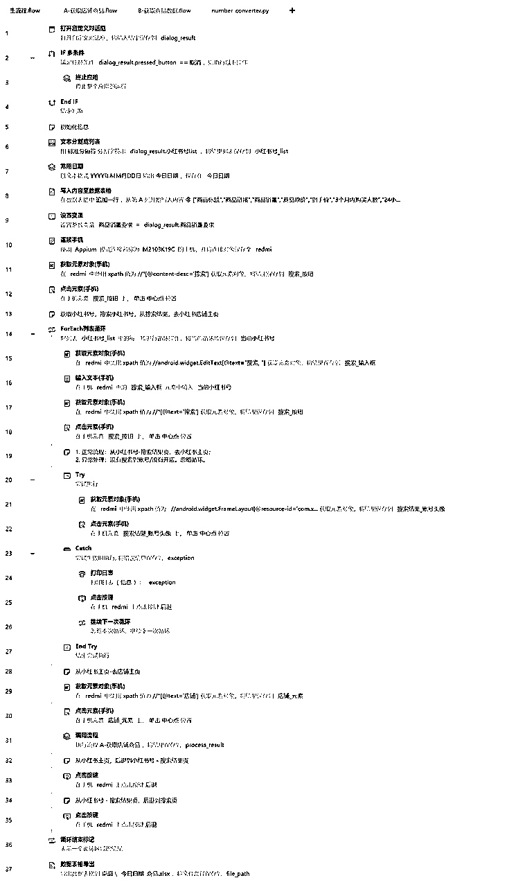

来源：https://vind9redwd.feishu.cn/docx/Tr5zdjgYWoKRNCxktExcXixEn1f
各位星球的小伙伴大家好，我是黄大路。目前在专注于用 RPA 来做一些业务解决方案。结合影刀 RPA ，已经搭建了 150 + 自动化流程。也合作了一些小红书MCN、电商团队/个人。帮助他们运营提效。
今天带来的实战项目。是一个小红书商家比较常见的业务场景：自动采集小红书店铺商品数据。
之前我在星球分享了采集小红书低粉爆款商品的流程。有很多朋友跟着搭建出来了。然后我这边客户后续还提了一个场景，就是采集对标店铺的商品。
这个业务场景大概是：
发现了一些销量不错的商品，同时发现对应店铺多数商品都很不错。于是想把对标店铺，满足一定销量要求的商品，全部采集下来，然后监控商品销量。
主要是用来做以下判断：
1、“24 加购的人数情况”，“3个月内商品购买人数”。通过3个月内的商品购买人数，来判断商品近期的销量情况。然后通过看商品 24 小时加购人数情况，数据不错可以迅速跟品。
2、每天监控商品销量，如果发现有些商品销量，每天都是逐步上涨的趋势，判断估计这款商品是潜在爆款，可以提前行动，寻找货源；
3、查看同行店铺上新情况，可以判断同行商品的迭代趋势、方向。
4、通过拿到对标店铺每日的商品销量、商品价格，就可以大概计算得到对标店铺每日销售额、客单价。
想着和之前分享的场景，有些类似。于是还是在星球分享出来。
本篇教程，主要介绍下自动采集对标店铺商品的流程。监控商品的流程，之前的文章有介绍过，可以看看。
这套流程是用的影刀 RPA。需要在 Win 系统 + Android 手机设备下运行。
还是先看下实现效果和采集的字段说明。
（1）采集商品演示
可以看看视频采集商品的演示视频。需要提前给出对标店铺的小红书号，我为了视频演示方便，填的一个，这里是可以填多个店铺的小红书号，同时多个店铺的商品。
除了填写小红书号，还需要填写下商品销量的数值，那么在采集的时候，是采集 「大于等于」 该值的商品数据。
如果你需要采集全店的商品数据，那么这里填写“0”就可以了。
（1）应用运行完成后，会采集到商品以下字段。分别是：商品标题、商品链接、商品销量、商品原价、到手价、3个月内购买人数、24小时加购。
整个流程是模拟人工操作，在小红书首页去输入小红书 ID，然后去到对标的店铺首页。然后按照设置的商品销量要求，来依次获取商品数据。
然后说一下，RPA 工具，使用上没有其他任何限制。没有采集店铺数、商品数等等限制。
因为是手机自动化应用。如果你没有 Android 手机，也可以考虑使用 Android 模拟器。
本文 RPA 流程的运行环境。
这里说下环境配置。整个手机自动化流程，会受到影刀 RPA 版本、Android 机型以及系统、小红书 App 版本影响。不同的版本，细节上会有差异，这部分自行调整。
配置教程：
电脑客户端、Android 手机端的配置流程。这部分建议按照影刀 RPA 官方文档进行配置。实在不会，可以问问影刀官方，或者问问我。
连接成功后，就会看见手机已经投屏到电脑上了。如果连接未成功，请仔细按照影刀RPA官方配置教程核对。
如果不太熟悉 RPA 指令，可以先看看上面的业务流程图，以及最后的完整指令截图。再来根据流程图，看指令逻辑。
1、初始化信息，并且连接手机。先写入表头数据到数据表格。
表头字段：
["商品标题","商品链接","商品销量","商品原价","到手价","3个月内购买人数","24小时内加购"]
第 1 行指令的自定义对话框信息，分别是「小红书号」、销量要求。销量要求我是设置的全局变量。
第 6 行指令的「文本分割列表」，可以直接用换行符分割。用户在输入小红书号时，有多个小红书号，就换行输入。
2、默认打开小红书首页，然后搜索“小红书号”，从搜索结果页，去到小红书号主页。
从小红书首页开始运行。开始搜索小红书号。
在第 1 部分指令截图里，连接到手机后，获取到搜索框，然后开始循环输入小红书号（因为支持多个小红书号的店铺商品采集，所以这里是循环输入。）
搜索按钮、输入框的的 xpath 路径：
# 搜索_按钮 //*[@content-desc='搜索'] # 搜索_输入框 //android.widget.EditText[@text="搜索, "] # 搜索_输入框 //*[@text='搜索']
第 2 部分，从搜索结果页，去到小红书号主页
这部分的逻辑，就是点击搜索结果页的小红书头像，然后进入小红书主页，从主页去小红书店铺首页。
这部分几个元素的 xpath 路径：
# 搜索结果_账号头像 //android.widget.FrameLayout[@resource-id='com.xingin.xhs:id/avatarLayout'] # 店铺_元素 //*[@text='店铺']
为了流程清晰，把获取店铺商品的逻辑，单独拆分出来，成为一个子流程。
其他的应该不难理解，获取完商品数据后，就一直循环获取下一个店铺的商品数据。
下面是获取店铺商品的整体逻辑，业务流程是：
元素 xpath 路径：
# 销量 //*[@text='销量']
了解完正常业务流程。再来看循环获取商品信息的流程。因为商品列表的商品信息，如果商品销量=0，则销量信息不会在商品列表显示，所以这里需要判断下。
为了流程清晰，获取商品数据，还是单独放了一个子流程。
另外，商品销量的数据处理，是写了一个数据函数。如下，直接复制使用就可以。
import re
def convert_chinese_number(text):
# 定义中文数字单位映射
units = {
'十': 10,
'百': 100,
'千': 1000,
'万': 10000,
'亿': 100000000
}
# 正则表达式匹配数字和中文单位
pattern = r'(\d*\.?\d+)([十百千万亿]?)'
match = re.search(pattern, text)
if not match:
return 0
number = float(match.group(1))
unit = match.group(2)
if unit:
return int(number * units[unit])
return int(number)
# 示例用法
# print(convert_chinese_number("1万")) # 输出: 10000
# print(convert_chinese_number("2.5亿")) # 输出: 250000000
# print(convert_chinese_number("点赞")) # 输出: 0
# print(convert_chinese_number("3千5百")) # 输出: 3500
第 1 部分，获取商品标题、价格。
这部分元素的 xpath 路径：
# 商品标题 //android.widget.TextView[@long-clickable="true" and string-length(@text)>10] # 商品原价 //android.widget.TextView[starts-with(@text, '已售')]/../../following-sibling::android.view.ViewGroup//android.widget.TextView[starts-with(@text, '¥')] # 商品到手价 //*[starts-with(@text,"到手价")]
第 2 部分，获取商品 3 个月购买数据、24 小时加购数据。因为这两个字段，有的商品是没有的，所以需要做下异常处理。
这部分元素的 xpath 路径：
# 三个月购买_元素 //android.widget.TextView[contains(@text, '3个月内') and contains(@text, '人购买')] # 加购_元素 //android.widget.TextView[contains(@text, '24小时内') and contains(@text, '人加购')]
第 3 部分，获取商品链接，并把获取的商品数据，写入到数据表格。
有个细节，「复制链接」的元素，这里我是用图像捕获的，这里你可以看下视频演示里的「复制链接」元素。可以和我一样图像捕获下，或者捕获元素，都可以。
这部分元素的 xpath 路径：
# 分享商品 //*[contains(@content-desc,"分享商品")] # 弹窗_滑动容器 (//androidx.recyclerview.widget.RecyclerView)[3] # 复制链接 //*[@content-desc='复制链接']
获取完商品信息后，然后写入数据表格，以下是数据表格写入的字段，供参考。
（1）主流程

（2）获取店铺商品
（3）获取商品数据
自动采集小红书号店铺商品数据的流程，都分享完成。如果你是做小红书电商业务，有类似选品方式的需求，可以按照流程来实现。
然后，因为手机自动化需要考虑的因素有很多（手机系统、硬件、App版本等）。所以在一些细节上，还是可以结合自己的情况，灵活考虑。
如果觉得有帮助，欢迎点赞 ~